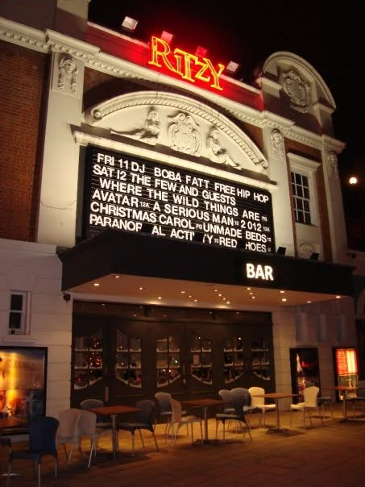

Work
Tonebank — Afro-Harmonic Sequencer · founding developer · node.audio/products/tonebank
Watch: African musical design explained · Looping with Afro-Logic — harmonic loops whose harmonies change length with the bell pattern, not with the beat.
Tonebank is a very unique MIDI sequencer, in that it originated in practical music-making. It was developed in collaboration with Barak Schmool, who studied with diasporic African communities in London, and has a PhD in African influences in jazz. I had practical classes with him at Trinity Laban, and also played in his Brazilian-percussion band for many years.
The MVP was about generating loops and phrases based on specific African musical traditions — crucially, modelling systems where the harmonic change doesn’t happen on bars, half-bars, etc., but where it’s related to the “bell pattern”, which we express as groups of 2 and 3 subdivisions. This results in naturally-syncopated structures — often there is no sound on the beat, which is what makes the body move.
MIDI sequencers are not traditionally like that — they come from a tradition of even grids, metronomic time and mechanistic divisions. Our paradigm was to look closely at the physicality of the expression that we’re familiar with, and to give tools which open that world to the electronic musician — making the acoustic, old, embodied traditions something valuable, treasured and foundational.
My role was a dual one — communicating between Barak and Adam, the programmer at Node Audio. I was responsible for encoding the musical part of the plugin, proposing UI/UX solutions which bridge the two concepts, testing the plugin on various DAWs, designing the manual, and making sure the naming conventions are consistent (especially musical terminology vs coding terminology).
The decision to honour the roots of the project is reflected in the tagline “Afro-Harmonic Sequencer”. We took great care to name our sources and give credit in the manual — specific traditions, where our knowledge comes from, the fact that we didn’t grow up in those traditions but that we have a passion for it: situating ourselves, and being open about where the knowledge we are passing comes from.
Queer at Heart
Queer at Heart is a vocal group for LGBTQIA+ people and allies, founded in Porto in 2023. We sing original arrangements (written by me) of songs in English, Portuguese and other languages, and members choose the repertoire by voting.
The way I run it is my own — shaped by what I did and didn’t find in the groups I’ve sung in over the years. I take care to give individual feedback to everyone, and always address people by name. Alongside the singing, I teach rhythmic coordination and use elements of improvised theatre and dance as well as technical musical work — Kodály solfège, konnakol, polyrhythmic clapping games. My teaching methods are eclectic, inspired not only by classical music but also jazz, gospel and other vocal traditions.
A rehearsal runs as a tiered evening: a remedial half-hour for people who have obvious trouble with intonation (sirens, repeating pitch, a bit of singing psychology); an hour for beginners, who bring the songs they’re learning and work towards taking part in performances; an hour of general musicianship — coordination, solfège, circle-song games; and an hour of repertoire, where newer members listen and then study the recordings at home. We don’t treat “soprano” or “tenor” as a gendered expectation — just as a range reference.
We also host art-sharing events, where members can express themselves through any medium — singing a song, reading a poem, making a sketch, leading a circle dance, making sculptures, even cooking. It’s essential that members develop an awareness of their body, and learn to take initiative and feel safe enough to share their subjectivities with each other. The focus is on unlearning silence, on empowerment, as well as musical development.
The Few — a cappella vocal group · founder & musical director · London, 2006–2019

The Few was an a cappella vocal group I formed in 2006, soon after moving to London from Poland. I’d been studying music for a while, and the first thing I wrote for it was an arrangement of Joni Mitchell’s “Blue.” It started as four of us and grew through weekly Monday rehearsals, the line-up filled by audition — people who answered online ads, or found us by word of mouth. Over the years we sang at the Royal Festival Hall, the Barbican, Tristan Bates Theatre, The Water Rats and Trafalgar Square, among other places.
Between 2006 and 2019 I wrote around thirty original arrangements for the group, from three to eleven parts — tunes by everyone from Joni to Britney and Massive Attack to MGMT. The repertoire was happily omnivorous: Joni Mitchell and Stevie Wonder beside Madonna, Beyoncé and Lady Gaga; Massive Attack, Imogen Heap and Hozier beside MGMT, Keane and Florence + the Machine; the Sisters of Mercy beside Vienna Teng’s “Hymn of Acxiom” — and, now and then, Sesame Street. Four decades of pop, folk, soul, goth and electronica, all rewritten for voices.
Listen: my a cappella arrangement of Metallica’s “Nothing Else Matters”
The concert I think of most was at the Ritzy in Brixton. It was the first time we sang “I’ll Be Seeing You,” close to the moment that same song became an elegy elsewhere: on 13 February 2019, when NASA declared its Opportunity rover lost after almost fifteen years on Mars, mission control sent it Billie Holiday’s 1944 recording of the song as a last transmission — a goodbye into the silence. We were near the end of our own run that year, too. It made for a quiet, fitting farewell.
KT6 — a cappella vocal group · musical director & arranger · London, 2016–2020
KT6 was an a cappella vocal group formed in 2016, where I was musical director and arranger until 2020, when I moved to Portugal at the beginning of the pandemic. The group described itself like this: “We are an a cappella vocal group formed of passionate and fun-loving amateur singers who bring familiar favourites to life with just our voices. From contemporary pop-hits to folk-song, our harmonies create a sound that we hope is both inspiring and memorable.”
The group was formed from people without any formal musical education, and they succeeded in singing close harmonies and odd time signatures, became a great team, and developed a profound musical sensitivity. A memorable concert was at the CornerHOUSE in Surbiton, choreographed by a theatre director — a family member of one of the singers.
Listen & watch: KT6 on SoundCloud · conducting Vienna Teng’s “Hymn of Acxiom” and Eska’s “Shades of Blue” (my arrangement)
Rhythms of the City — samba & percussion band · lead vocalist, percussionist & touring assistant · London, 2013–2019
I heard about Rhythms of the City from my teacher at Trinity Laban, where I was doing a vocal jazz degree, and played in the band from 2013 to 2019. During that time I learned to play agogô, chocalho, caixa, surdo and repinique, sang lead on much of the repertoire, and gained hands-on experience of a range of Afro-Brazilian and Latin-American styles. For four years I was also the band’s touring assistant, helping to organise the concerts and the group.
Rhythms of the City is a London samba and percussion band — the rhythmic heart of the F-IRE Collective jazz community — bringing together drummers, singers, dancers, horns and guitars in a spectacle of up to seventy-five performers. Alongside authentic carnival samba it plays salsa, soca, reggae, funk and hip-hop, and averages around seventy-five shows a year at carnivals, festivals and clubs across the UK and Europe: from Notting Hill Carnival, Glastonbury and Womad to the Barbican, Somerset House and the Southbank Centre, among many others. In 2012–13 it became the first UK samba group to present its own show at a Rio samba school. Over the years it has shared stages and recordings with the likes of Friendly Fires, Jamie Cullum and Darius Brubeck, and recorded for the BBC and Channel 4.
Background
I trained in jazz voice and composition at Trinity Laban, and for nine years taught musicianship, harmony and jazz improvisation to adults at City Lit in London. I’ve founded, led and arranged for my own vocal groups since 2006 — around fifty arrangements, three to eleven parts, in English and Portuguese — sung in many choirs across jazz, gospel, classical and contemporary styles, and performed for about a decade as a singer and percussionist with a professional Brazilian samba group, including tours. I also gave a TEDx talk on why almost no one is really “unable to sing”.
A fuller CV is available on request.